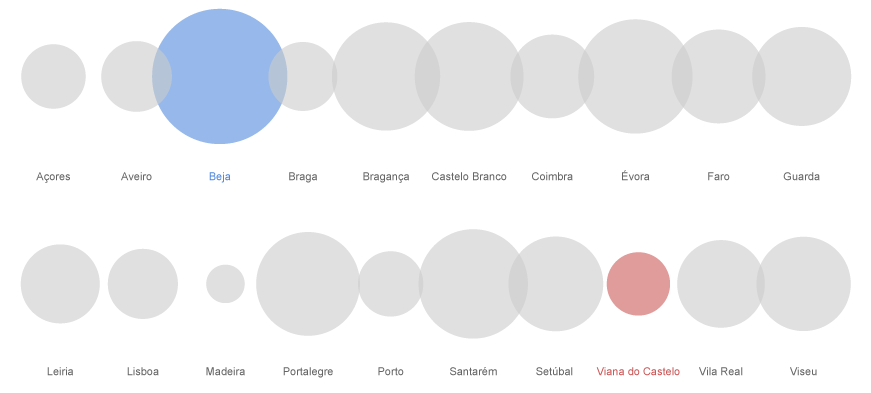
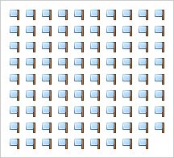

Divisões Administrativas de Portugal
Portugal tem uma estrutura administrativa complexa, fruto de quase um milénio de diversas divisões territoriais. Desde cedo, e à medida que a expansão portuguesa progredia com a reconquista de novos territórios, a monarquia foi exigindo uma estruturação administrativa que permitisse um permanente domínio e organização do espaço; pelo que, cedo houve tendência para demarcar os terrenos onde existissem "villas" ou outras propriedades, conforme consta em documentos medievais.
Ao longo da História de Portugal aplicaram-se diversas divisões administrativas, mas que nem sempre correspondiam a efectivas circunscrições com carácter autárquico. A primeira divisão de que se tem conhecimento baseia-se exclusivamente na localização dos principais conventos no pais, resultantes da ocupação romana, (Conventus Bracarum - sede em Braga, Conventus Scallabitanus - sede em Santarém, e Conventus Pacensis - sede em Beja). Mas o primeiro reconhecimento oficial da diversidade regional do país surge no testamento do rei D. Dinis (1279-1325) que reconhece as cinco "regiões" ("Antre Douro e Minho"; "Antre Douro e Mondego"; "Beira", "Estremadura" e "Antre Tejo e Odiana"). O seu successor, D. Afonso IV (1325-57), instituiu oficialmente seis comarcas, (Antre Douro e Minho, Antre Douro e Mondego, Beira, Estremadura, Antre Tejo e Odiana e Algarve).
Entre o reinado de D. Afonso IV e o inicio do século XX são inúmeras as alterações à estrutura administrativa do país e seria demasiado enfadonho explorar aqui as diversas transformações na história do território. Deste modo, este artigo concentra-se exclusivamente nos métodos de divisão territorial contemporâneos.
Distritos
Os distritos, embora já gastos e desactualizados no presente enquadramento, permanecem como a mais relevante subdivisão do país, servindo de base para uma série de utilizações da divisão administrativa, que vão desde os círculos eleitorais, aos campeonatos regionais de futebol, por exemplo. Desde 1976, Portugal está dividido em 18 Distritos e 2 Regiões Autónomas insulares (Açores e Madeira), que englobam 308 Municípios (ou Concelhos) e que se sub-dividem em 4257 Freguesias. Apesar de o Distrito ser uma divisão administrativa que data de 1835, foi apenas com a entrada em vigor da Constituição de 1976, que Portugal se fragmentou na estrutura que conhecemos hoje. Esta divisão politica tem sido alvo de várias tentativas de criação de um sistema mais prático e lógico que melhor se adeqúe à realidade económica, cultural e demográfica do país. A mais recente tentativa, o processo de regionalização, proposto pelo governo socialista de António Guterres foi travado pelo referendo negativo de 8 de Novembro de 1998.
Divisão distrital e municipal:
 |
||||||
| Portugal Continental Área Total: 89 281 km² |
Portugal Continental 18 Distritos |
Portugal Continental 278 Munícipios |
Portugal Continental 278 Capitais de Munícipio |
|||
| Açores: 2 333 km² Madeira: 828 km² |
Açores e Madeira | Açores: 19 Munícipios Madeira: 11 Munícipios |
Açores e Madeira 30 Capitais de Munícipio |
A distribuição dos distritos portugueses é bastante homogénea, sendo que o maior distrito (Beja) é apenas 4.6 vezes superior ao menor distrito (Viana do Castelo), o que comprova em parte a desadequação à actual estrutura do país, que apresenta uma distribuição da população e do PIB em nada semelhantes. O distrito de Beja representa cerca de 11.5% de toda a área de Portugal continental, enquanto que Viana do Castelo representa apenas 2.5%. No entanto, embora sendo o distrito mais pequeno de Portugal, Viana de Castelo é 1219 vezes maior que o Principado de Mónaco, o qual tem menos de 2 quilómetros quadrados. Mónaco é o segundo Estado independente mais pequeno do mundo, apenas maior que o Vaticano (com 0.44 km²) e é invariavelmente o país com a maior densidade populacional (23 660 pessoas por km²). Note-se ainda que apesar de Beja representar 11.5% da área total de Portugal continental, a sua população representa apenas 1.6%.
| Beja é o maior distrito português com 10 225 km² | Viana do Castelo é o mais pequeno distrito português com 2 255 km² | Numa análise diferente pode ver-se como o distrito de Beja é maior em área que os distritos de Porto, Braga e Viana do Castelo juntos. | ||||
| O distrito de Beja é 4.6 vezes maior que Viana do Castelo | O distrito de Viana do Castelo é 1219 vezes maior que o Principado de Mónaco | No entanto, se considerarmos a população de cada distrito a relação inverte-se, dado que Beja tem 161 211 habitantes e Viana do Castelo 250 273. |
Distribuição de distritos e regiões autónomas por área total:

Note-se que apesar de Viana do Castelo ser o mais pequeno distrito português, a Região Autónoma da Madeira, com apenas 822 km², tem sensivelmente o terço do tamanho.De modo a perceber melhor a distribuição territorial portuguesas recorreu-se a um Treemap. Treemap é um método de visualização de dados criado por Ben Shneiderman da Universidade de Maryland nos EUA. Inventado em 1991, o método Treemap tem sido recorrentemente usado em projectos que lidam com a visualização de informação hierárquica num espaço restrito e o seu algoritmo base tem sido diversificado em exemplos como Circular Treemaps e Voronoi Treemaps. Os dois exemplos mais famosos de Treemaps, são o Map of the Market de Martin Wattenberg e o Newsmap de Marcos Weskamp.
Neste caso pode ver-se como um Treemap, devido à sua divisão ortogonal, facilita uma melhor percepção da área de cada distrito, embora a verdadeira vantagem do método surja na utilização de sub-divisões e inserção de variáveis estatísticas.
| Portugal Continental: Concentração da população por distritos | Treemap de Portugal continental que ilustra as proporções territoriais de cada distrito. Mantém-se a mesma coloração relativa à concentração da população de modo a estabelecer um paralelo com a figura anterior. | Neste exemplo, o Treemap foi alterado de modo a reflectir o número total de habitantes (área de cada rectângulo = população). Note-se como o litoral explode e o interior encolhe. |
Para além da óbvia transfiguração do distrito de Lisboa, visível no segundo Treemap, é notório também um aumento substancial do litoral Noroeste de Portugal continental. Este pequeno triângulo do país, formado por Aveiro, Porto e Braga, que não chega a representar 9% da área total de Portugal continental, sofre uma expansão considerável no último mapa de população pelo simples facto de estes três distritos somarem 3 326 772 habitantes, ou seja, 33.6% (um terço) de toda a população de Portugal continental.
Uma conclusão evidente e frequentemente debatida, de que rapidamente nos apercebemos, é a concentração da população no litoral. É curioso que os 6 maiores distritos portugueses (à excepção de Santarém) sejam igualmente os 6 distritos com menor população e com um carácter em comum: a fronteira com Espanha.
Não deixa de ser assustador que numa altura que se fala na desertificação do interior exista um distrito (em 18) que tenha uma população superior ao valor cumulativo de 9. De facto, se juntarmos a população dos distritos de Faro, Beja, Évora, Portalegre, Castelo Branco, Guarda, Viseu, Bragança e Vila Real, que representam 63.8% de toda a área de Portugal continental, obtemos um valor de 2 006 096 habitantes, um número ainda inferior aos 2 135 992 habitantes do distrito de Lisboa. E tudo leva a crer que esta discrepância continuará a acentuar-se.
Municípios e Freguesias
Os municípios (ou concelhos) portugueses são a subdivisão territorial mais consistente que o país teve ao longo dos seus 900 anos de história. Entre os municípios mais antigos de Portugal, que precedem a própria independência do país, estão Coimbra e Santarém, fundados respectivamente em 1085 e 1095. Contudo é São João da Pesqueira (distrito de Viseu) o mais antigo município português, tendo sido fundado em 1055. Muitos municípios portugueses têm origem nas cartas de foral que os reis atribuíam a certas terras e aos territórios limítrofes. Uma grande maioria permaneceu até hoje - primeiro, sujeitos a leis particulares a cada um deles, em obediência aos usos locais e à vontade régia expressa no foral da terra, e depois sujeitos a leis nacionais gerais a partir do liberalismo oitocentista.
A distribuição de municípios por distrito é relativamente homogénea sendo que em média um distrito ou região autónoma possui cerca de 15 municípios. O distrito português com mais municípios é Viseu com 24, seguido por Santarém e Aveiro, respectivamente com 21 e 19 municípios. O distrito de Viana do Castelo para além de ser o mais pequeno de Portugal é também o distrito com menor número de municípios, apenas 10.
| Distrito (média) | Viseu | Viana do Castelo | ||
| Em média, cada distrito português tem cerca de 15 municípios. | Viseu é o distrito com maior número de municípios: 24 | Viana do Castelo é o distrito com menos municípios: 10 |
A distribuição em área dos 308 municípios portugueses, é como seria de esperar bastante menos homogénea que a distribuição territorial por distritos. O maior município português é o município de Odemira (distrito de Beja) com 1720.6 km², 26 106 habitantes e subdividido em 17 freguesias. O município de São João da Madeira (distrito de Aveiro) é o mais pequeno município português com apenas 8.11 km², correspondendo à área da cidade, o que lhe confere uma elevadíssima densidade populacional: 2601,97 hab/km².
| Município de Odemira Área Total: 1720.6 km² |
Município de São João da Madeira Área Total: 8.11 km² |
|||
| O município de Odemira é 212 vezes maior que São João da Madeira. | Contudo, o município de São João da Madeira é 4.3 vezes maior que o Principado de Mónaco. | |||
São João da Madeira pertence ainda ao restrito grupo de 5 municípios portugueses que possuem apenas uma freguesia, sendo os restantes, Alpiarça (distrito de Santarém), Barrancos (distrito de Beja), Porto Santo (R.A.M.) e São Brás de Alportel (distrito de Faro). O município português com maior número de freguesias é o município de Barcelos (distrito de Braga) com 89 freguesias. Acrescente-se ainda uma interessante excepção na constituição portuguesa que é o município do Corvo (R.A.A.), que com apenas 17.1 km² e 425 habitantes, é o único município português que não possui qualquer freguesia, por força do artigo 86.º do Estatuto Político-Administrativo da Região Autónoma dos Açores.
| Município (média) | Barcelos | Apenas 1 freguesia | Corvo | |||
|  | ||||||
| Em média, cada município português tem cerca de 14 freguesias. | Barcelos (distrito de Braga) é o município português com maior número de freguesias: 89 | São João da Madeira, Alpiarça, Barrancos, Porto Santo e São Brás de Alportel são os únicos 5 municípios portugueses que possuem apenas uma freguesia. | O município do Corvo (situado na mais pequena ilha dos Açores) é o único município português que não possui nenhuma freguesia. |
NUTS
As NUTS – Nomenclaturas de Unidades Territoriais para fins Estatísticos (English: Nomenclature of Territorial Units for Statistics) designam as sub-regiões estatísticas em que se divide o território dos países da União Europeia, incluindo o território português. Criadas pelo Eurostat no âmbito da UE, as NUTS pretendem uniformizar as estatísticas regionais europeias e são empregues, entre outras coisas, na distribuição regional de fundos comunitários. Em 1998 as NUTS foram aprovadas pela Legislação Comunitária, mas apenas entraram em função em 2003 no regulamento do Parlamento Europeu.
Até 4 de Novembro de 2002 o Sistema Estatístico Nacional (SEN) utilizou uma codificação nacional para as NUTS distinta da utilizada pelo Eurostat. Contudo, com o Decreto-Lei 244/2002 de 5 de Novembro, publicado no D.R., considerou-se oportuno harmonizar a codificação nacional com a utilizada pelo Eurostat.
As NUTS estão subdivididas em 3 níveis: NUTS I, NUTS II e NUTS III. Contudo, em alguns países, entre os quais Portugal, são utilizados dois níveis hierárquicos complementares, respectivamente LAU I e LAU II, anteriormente denominados por NUTS IV e NUTS V. As LAU – Unidades Administrativas Locais (English: Local Administrative Unit) no contexto nacional representam os 308 municípios portugueses (LAU I) e respectivas 4257 freguesias (LAU II).
-
NUTS I - (3 Unidades)
Portugal Continental, Região Autónoma dos Açores (R.A.A.) e Região Autónoma da Madeira (R.A.M.)
-
NUTS II - (7 Unidades)
Norte, Centro, Lisboa, Alentejo, Algarve, R.A.A e R.A.M.
-
NUTS III - (30 Unidades)
Minho-Lima, Cávado, Grande Porto, Alto-Trás-os-Montes, Douro, Ave, Tâmega, Entre Douro e Vouga, Baixo Vouga, Baixo Mondego, Dão-Lafões, Serra da Estrela, Beira Interior Norte, Cova da Beira, Beira interior Sul, Pinhal Interior Norte, Pinhal Interior Sul, Pinhal Litoral, Oeste, Médio Tejo, Alto Alentejo, Alentejo Central, Lezíria do Tejo, Grande Lisboa, Península de Setúbal, Alentejo Litoral, Baixo Alentejo, Algarve, R.A.A. e R.A.M.
A figura seguinte ilustra a organização territorial portuguesa por NUTS. Desta vez não se incluiu as regiões autónomas dos Açores e da Madeira, por estas se manterem inalteradas em relação à divisão por distritos.
 |
||||||||
| NUTS I | NUTS II | NUTS III | LAU I |
LAU I - Capitais |
Para melhor se compreender a diferença entre os dois métodos, pode ver-se lado a lado Portugal Continental organizado por distritos e por NUTS.
| Distritos + Municípios | NUTS III + LAU I |
Sources
- INE - Instituto Nacional de Estatística
http://www.ine.pt/
- ANMP - Associação Nacional de Municípios Portugueses
http://www.anmp.pt/
- Sistema Nacional de Informação Geográfica
http://snig.igeo.pt/
- Wikipedia
http://www.wikipedia.org/